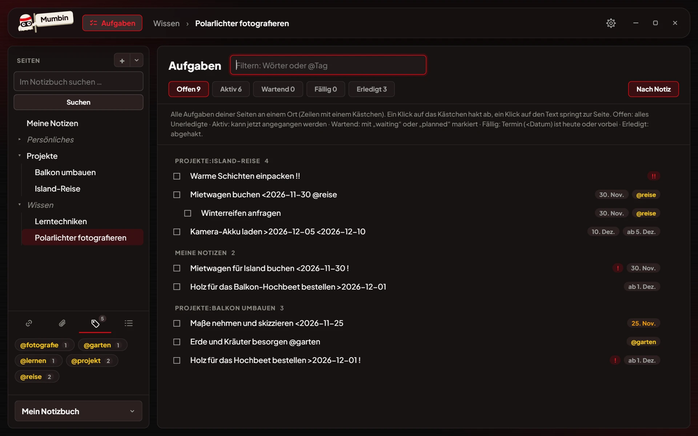

Alle Beiträge / Anleitung / 4 Min. Lesezeit
Aufgaben mit Beginn und Frist in deinen Notizen
Aufgaben bleiben in der Notiz, in der sie entstehen. So setzt du Beginn und Frist und behältst den Überblick.
Eine Aufgabe schreiben
Eine Aufgabe ist eine Zeile mit einem Kästchen. Klicke in der Formatleiste auf das Kästchen-Symbol (☐) oder schreibe [ ] Text. Auch Zeilen, die mit TODO: beginnen, zählen als Aufgabe.
- Mit
!oder!!markierst du die Wichtigkeit. - Mit
@namegibst du ein Stichwort. - Eingerückte Zeilen sind Unteraufgaben.
Beginn und Frist festlegen
Beides ist freiwillig. Mumbin erkennt >2026-12-01 als Beginn und <2026-12-31 als Frist am Ende der Zeile. Du musst die Zeichen nicht tippen:
- Im Editor: Setze den Cursor in die Aufgabe und drücke
Strg+Umschalt+D. Oder klicke auf den Kalender-Knopf der Formatleiste (Strg+D): Auf einer Aufgabe steht dort als Erstes „Beginn und Frist der Aufgabe festlegen …“. - In der Aufgabenübersicht: Fahre mit der Maus über eine Aufgabe und klicke auf den Kalender-Knopf rechts.

Leere Felder löschen das Datum wieder. Mumbin schreibt es als Text in die Zeile, du siehst es also immer direkt in der Notiz.
Die Aufgabenübersicht
Klicke oben links auf „Aufgaben“. Die Übersicht sammelt alle Aufgaben deiner Seiten – standardmäßig nach Notiz gruppiert; der Knopf „Nach Notiz“ schaltet auf eine einzige Liste um.

- Offen: alles Unerledigte.
- Aktiv: Aufgaben, die jetzt angegangen werden können (ohne späteren Beginn).
- Wartend: mit „waiting“ oder „planned“ markiert.
- Fällig: die Frist ist heute oder vorbei.
- Erledigt: abgehakt.
Ein Klick auf das Kästchen hakt ab, ein Klick auf den Text springt in die Notiz. Das Feld oben filtert nach Wörtern und @Tags. Gesperrte Seiten erscheinen nicht in der Übersicht.